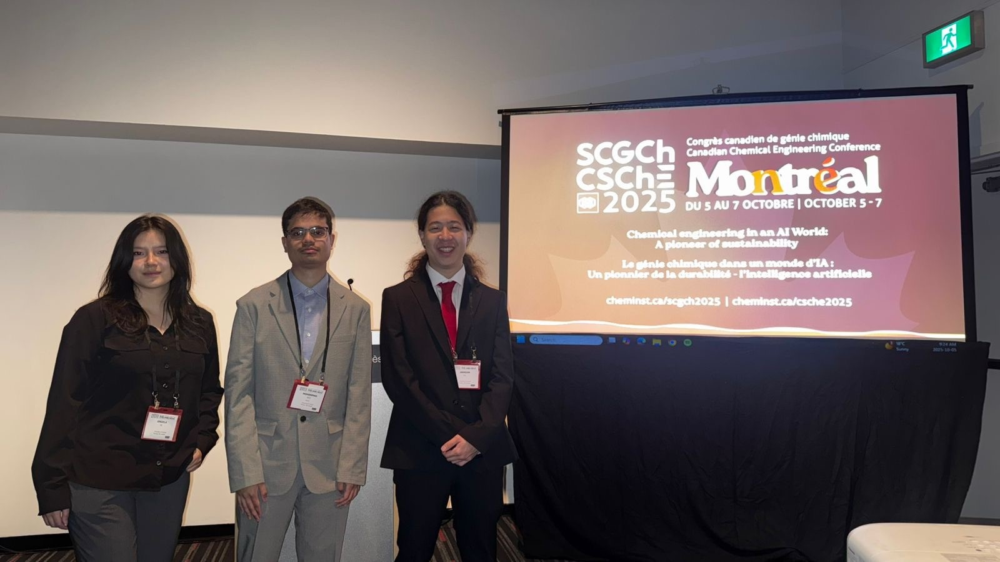

Technical Innovation
The conference opened with the Reg Friesen and Robert G. Auld Paper Competitions. Three U of T students — Angela Ye, Mohammad Abdul Aziz, and Jaekeon An — presented their work on topics ranging from lithium battery recycling to hydraulic fracturing optimization.
“This was a great opportunity to learn about different aspects of chemical engineering and see the depth of technical innovation coming out of our department,” said Chapter Chair Basma Elsabban.

Angela Ye, Mohammad Abdul Aziz, and Jaekeon An